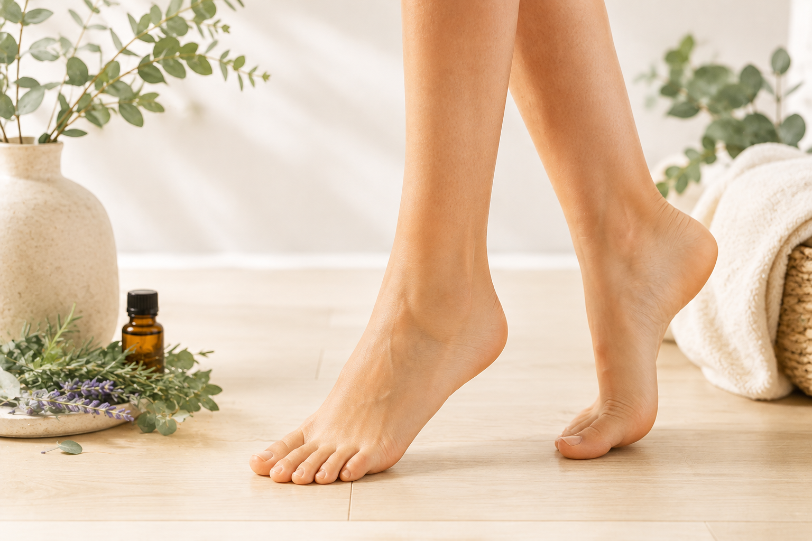

01
ABOUT
ABOUT THIS SITE
足元から、
自分をいたわる。
Foot & Aroma by GOBでは、 アロマテラピー・リフレクソロジー・ 足元セルフケアを中心に、 毎日の暮らしに取り入れやすい 情報を紹介しています。
「立ち仕事で足が疲れる」 「夕方になると足が重い」 「自宅でできるケアを知りたい」 といった身近な悩みから、 自分に合ったセルフケアを 探してみてください。
Foot & Aromaについて →FOOT CONCERNS
足のお悩みから探す
気になる状態から、 今の自分に合ったセルフケアを探せます。
AROMATHERAPY
香りを、
毎日の余白に。
植物から得られる精油の香りを、 毎日の暮らしの中で楽しむ。
香りの特徴や初心者向けの選び方、 リラックスタイムやお部屋での 楽しみ方を紹介します。
アロマについて見る →
REFLEXOLOGY
足元をいたわる、
心ほどける時間。
足元に触れながら、 心地よいリラックスタイムを。 初心者向けの基本から 自宅で取り入れやすいケアまで紹介します。

COLUMN
足と香りのコラム
毎日のセルフケアに役立つ 足元と香りの情報を紹介します。
GOB
FUTURE
オンラインから、
その先のセルフケアへ。
現在は情報発信を中心に、 足元から毎日を心地よくするための コンテンツを育てています。
今後は、 アロマテラピーやリフレクソロジーに関する サービス展開も検討しています。
Foot & Aroma by GOBについて →